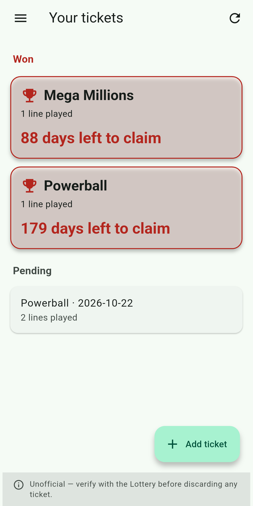
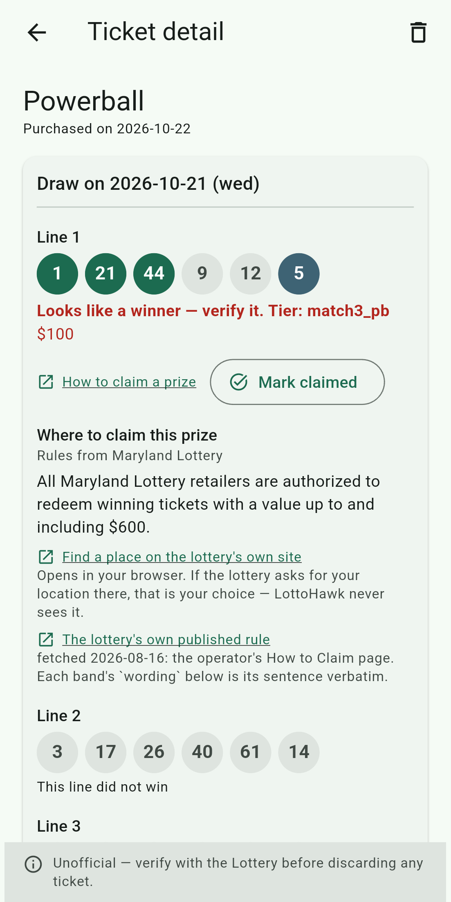
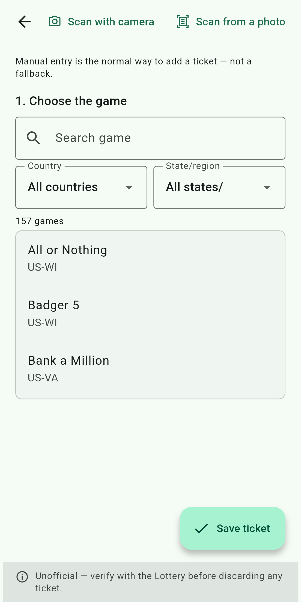

Qué hace
Añade un boleto una vez, escribiendo sus números o escaneándolo, y LottoHawk lo compara por su cuenta con los resultados publicados después de cada sorteo que juega. Si gana, te llega una notificación. Si no, pasa en silencio a "no ganador", y no tienes que volver a mirarlo.
- El premio de cada jugada ganadora, incluidas opciones como Power Play, Megaplier, Wild Ball y FIREBALL
- Dónde cobrar el premio en el estado donde compraste el boleto, con las palabras de la propia lotería y sus centros de cobro
- Cuántos días quedan para cobrar antes de que un boleto ganador venza
- Boletos con varias jugadas, y boletos que juegan varios sorteos
Juegos
Powerball, Mega Millions, Lotto America y Millionaire for Life, y los juegos de sorteo de los estados de EE. UU., el Distrito de Columbia, Puerto Rico y las Islas Vírgenes: Pick 3, Pick 4, Cash 5, Take 5, Pega 3 y muchos más. Los raspaditos no funcionan: solo la lotería puede revisarlos.
En el teléfono
Desliza para ver más →



Los boletos de estas imágenes se inventaron para ellas. Las capturas muestran la app en inglés; también está en español.
Privado
Sin cuenta con nosotros, sin anuncios y sin rastreo. Tus boletos, números y fotos se quedan en tu teléfono; LottoHawk descarga los números ganadores publicados y no envía tus boletos a ningún sitio, salvo cuando le pides a una lotería que revise uno. La política de privacidad dice exactamente qué guarda la app y a dónde se conecta.
LottoHawk es independiente: no está afiliada a ninguna lotería, y no vende boletos ni acepta apuestas. Lo que muestra no es oficial; confirma siempre un premio con la lotería o un detallista antes de descartar un boleto. Para adultos de 18 años o más.